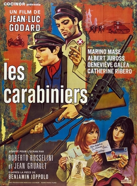

Jean-Luc Godard
1963
80 minutes
This is another early strange Godard one, just starting to get a little experimental and playful. It's basically about two yokel dipshits who join the army for all the wrong reasons, which often seems to be why a lot of people join the army. They have a pretty good time while the army is winning, but run into tougher luck once the tide turns.
Eventually they rejoin the girls they left back home, who are eager to see what loot they brought back from the poor people in other lands who weren't sufficiently able to defend their stuff. Even though they spent much of the film looting and menacing civilians, most of their surviving loot is in the form of boxes of postcards with images of the places they had been (or could have gone to). They spend a good amount of time with their girlfriends, flipping over picture postcards and announcing the locations to those who had been back home awaiting them. Yes, it seems most of the film was just done waiting to get to this pivotal scene. And it's a good one. The yokels seem almost as proud of bringing back pictures of the Taj Mahal as they would of bringing back the treasures of the Taj Mahal itself.
The soldiers never get any other pay for their troubles besides their photos and memories. Since they lost the war, their paychecks are void. And they end up being rounded up and shot for being on the losing side to boot, which is as close to this one is going to come to a happy ending. This one is nasty and cynical even for Godard, though still a bit funny and not entirely without a soul.
Time to choose something different: